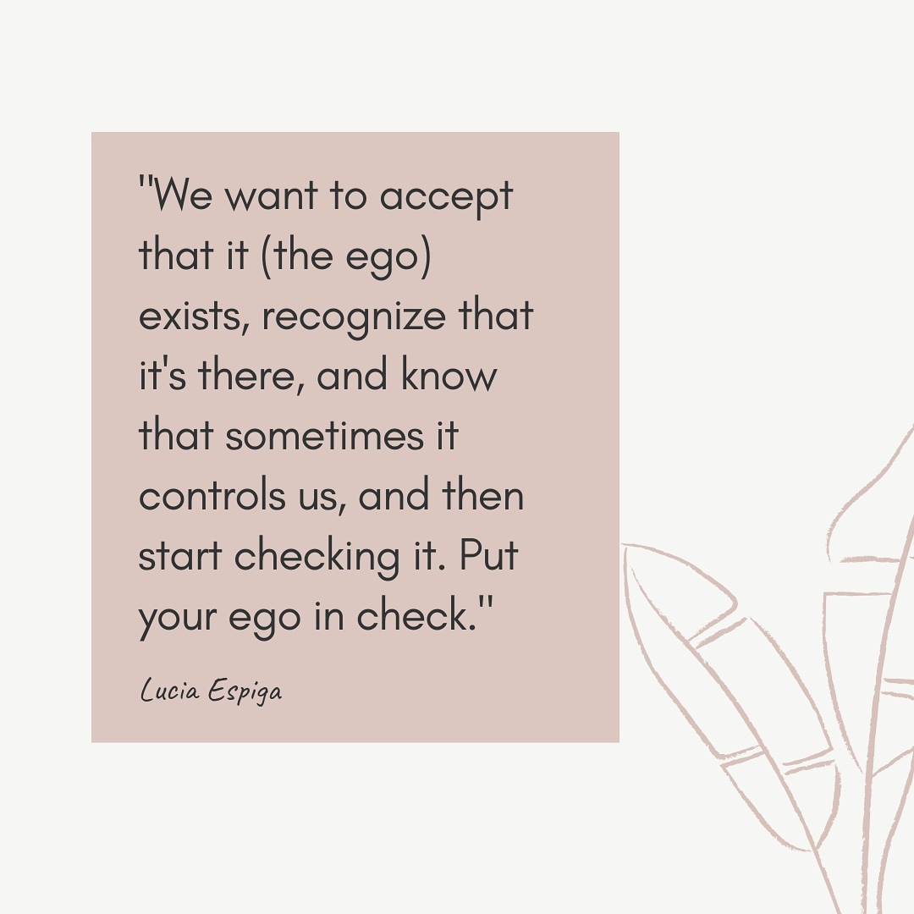
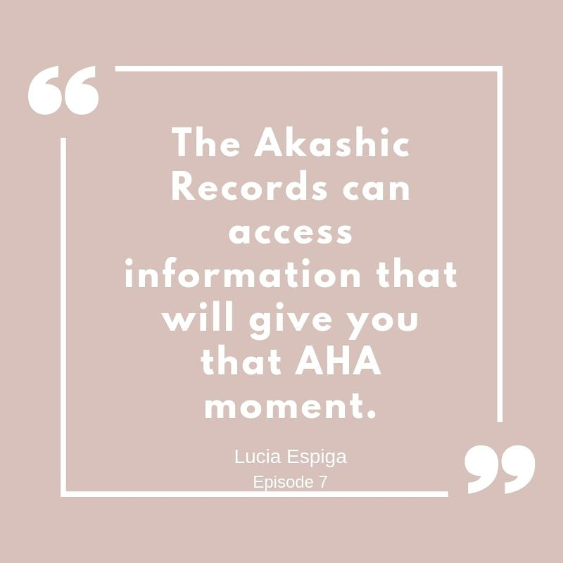
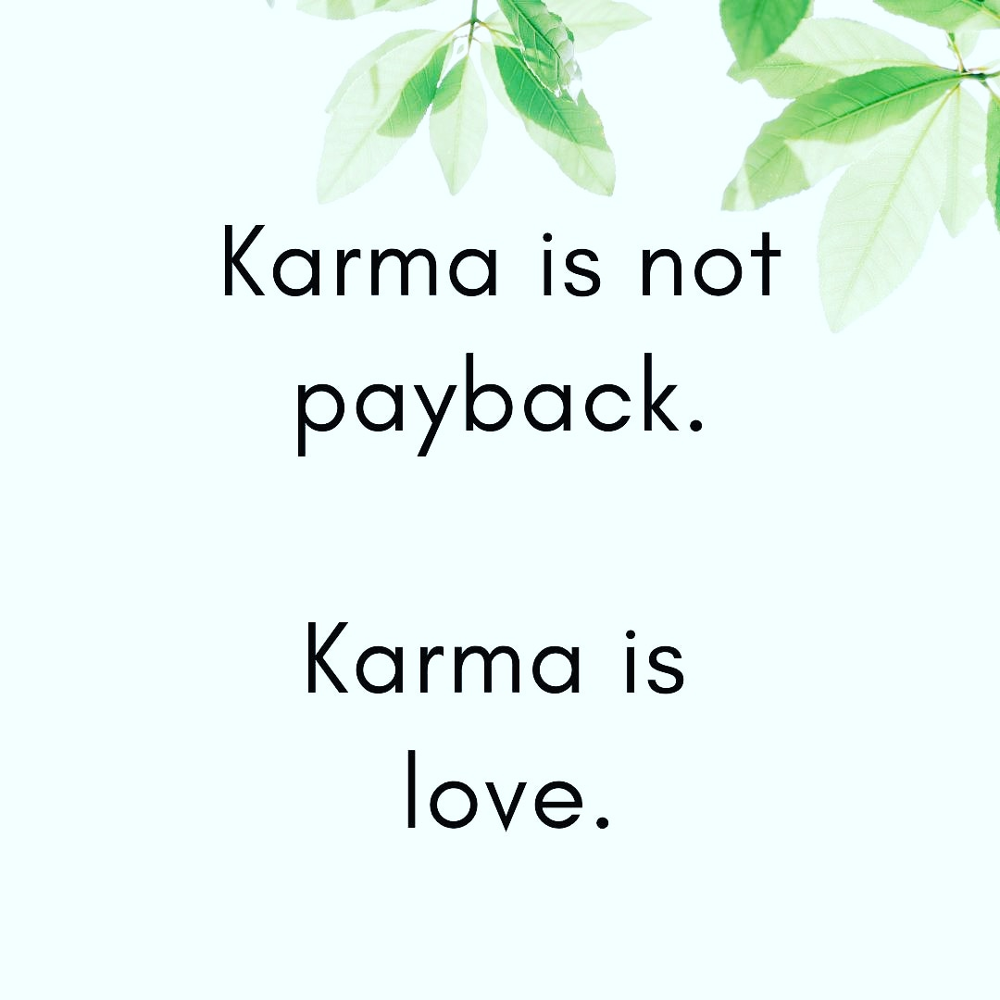

The Soul Tribe Podcast

With Lorena & Lucia
The Soul Tribe Podcast was created to help you navigate through the world of spirituality, wellness, and self-development in an easy, grounded and relatable way. We break down everything from the the Akashic Records, manifesting, spirituality and so much more! We want to help expand your boundaries and bring the spiritual world to you in a fun and easy way! Get ready to be inspired with tips, tools and easy to digest information.
Working for the evolution of the subconscious unity!



Go to -->The Soul Tribe Podcast Website <--